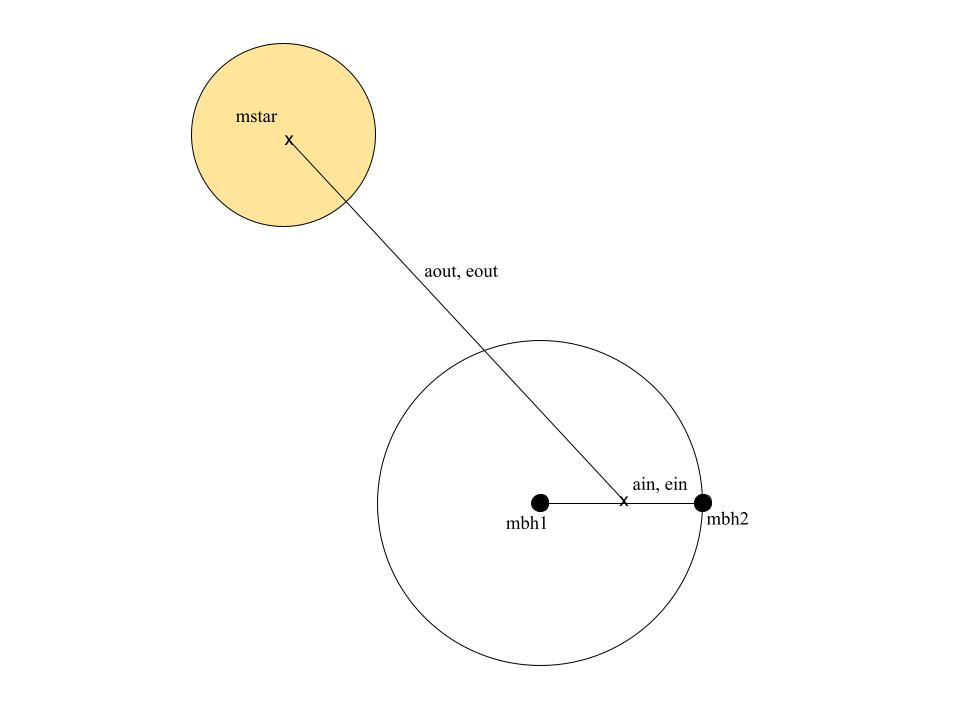

Getting Started
accretionpy requires a set of already determined values for a 3-body system:
mstar is the mass of the star in solar masses.
mbh1 and mbh2 are the masses of the respective black holes in the system in solar masses.
NOTE: The current version of accretionpy only supports equal mass black holes, so mbh1 should equal mbh2.
aout is the distance between the center of mass of the star and the center of mass of the BBH in solar radii.
accretionpy assumes this value is set so that the radius of the star is equal to its Roche Lobe.
eout is the eccentricity of the star-BBH orbit.
ain is an optional input that describes the separation between the black holes in solar radii. If this is not entered, the critical
separation to achieve ballistic accretion will be calculated and displayed.
ein is the eccentricity of the BBH orbit.
See Figure 1 for a visualization of the required input variables.
To get started using this package, either clone the repository from GitHub
`` $ git clone https://github.com/chamberse/accretionpy``
or pip install it using the command line entry below.
$ pip install accretionpy
Open the initial_conditions.txt file in the text editor of your choice and add your inputs for each variable.
To run the package, run:
$ python /accretionpy/accretionpy/accretion.py
{kind=link}

Figure 1: Visualization of the definition of each variable used in the accretionpy calculations.